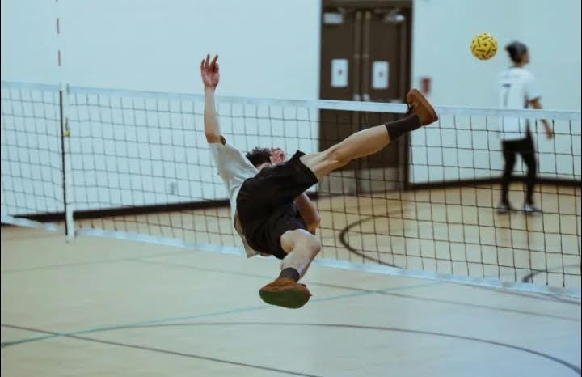

TRUTH IN INK | SPORTS
Caraga outlasts Bicol in three closely contested sets during the regional sporting meet.

The Sepak Takraw court came alive with energy as the regional teams from Caraga and Bicol faced off during Palaro Tu Agsur 2026 on May 26. Spectators and online viewers tuned in to witness two regional sides compete in an exciting sporting event.
Caraga secured a hard-fought 2–1 victory with set scores of 21–19, 18–21, and 21–17, overcoming Bicol in a tightly contested three-set match.
Caraga launched an aggressive offense from the opening serve, unleashing powerful acrobatic spikes that challenged Bicol's defense and forced its players to react quickly under pressure.
Bicol refused to back down, responding with swift saves, well-placed returns, and intelligent positioning that kept the score close throughout the contest.
Long rallies unfolded as players leaped and stretched to keep the rattan ball in play, earning applause from spectators impressed by the athletes' skill and determination.
Both teams also demonstrated communication and teamwork, working together to cover gaps and support one another during crucial moments of the match.
The match highlighted the excitement of Sepak Takraw, a sport that combines acrobatic kicks, quick reflexes, and precise ball control. Its fast-paced action continues to attract attention across the Philippines.
Viewers followed the action through the Palaro Tu Agsur 2nd Channel livestream, reflecting the interest that regional sporting events generate among sports fans.
Regardless of the outcome, athletes from both regions represented their teams through their effort and sportsmanship, providing an example for younger players.
Palaro Tu Agsur 2026 celebrates athletic talent, regional pride, and unity while giving young athletes an opportunity to showcase their abilities.
← Back to Sports Article